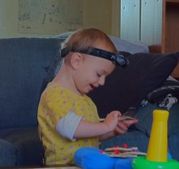
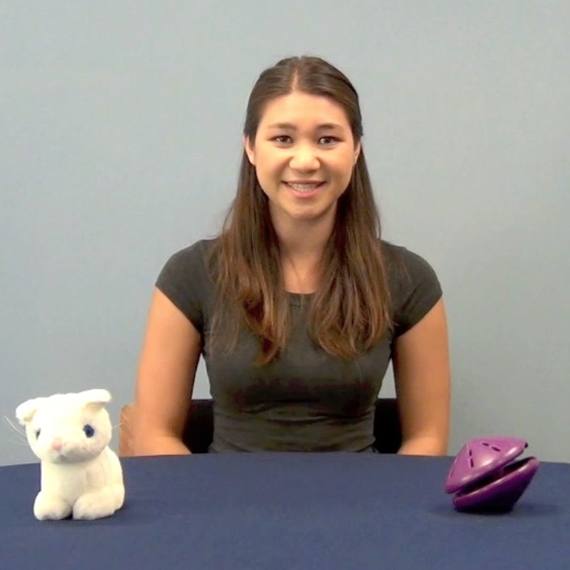

Stanford Language and Cognition Lab
For Parents: Participate!
Use our online form or visit the Center for Infant Studies main site to learn more about participating in our on campus studies! Contacting us does not mean that you have volunteered for a study; you will have the opportunity to choose whether or not to participate each time a study arises for which your child may be eligible.
Read frequently asked questions by parents about our studies.
Studies at Stanford
Baby Headcamera Study
|  | What helps a child learn language besides hearing words? Knowing what a child sees from his or her point of view while hearing speech might help us better understand the learning process. In this study, we invite parents and children into our lab to play with toys while the child wears a headband containing a small camera. We are curious how this changes across development, and are currently running children in various age groups from 3-21 months of age. |
Other CFIS Research
The Language and Cognition Lab is a member of the Center for Infant Studies: a consortium of three research groups in the Stanford Psychology Department, each working to answer many different questions about infant and child development. Each lab is currently running several studies for children of a variety of ages. To learn more about the research from the other two groups, check out the Center for Infant Studies main page, and click on the links to each lab's individual site.
Studies at the Children's Discovery Museum
Our researchers often conduct studies at the San Jose Children's Discovery Museum. We are located in the CDM's research room, right across from the ambulance, and you may see our researchers with Stanford nametags around the museum. Many of our studies involve eye-tracking, which means we show your child videos or pictures on a special computer that allows us to see what they are paying attention to.
There are several different studies that we are currently conducting at the museum. Some examples are below!
Social Looking
|  | What do children pay attention to during complex social situations, such as conversations? This study involves watching a fun 7 minute video with scenes of people talking about new and familiar toys, interspersed with some Elmo clips. We are curious how where children look changes across development, and are currently targeting children aged 0-4 years. |
Taking turns in conversation
What do children understand about conversation? How do they know when it's someone's turn to speak? In this 4-minute study, children watch a few short clips of puppets talking to each other, with some other fun clips in-between. Some of the clips have more or less language information than others. We would like to find out what children know about taking turns conversation, and which parts of language they use to figure out when someone new will start talking. We are currently targeting children 1-6 years old. |